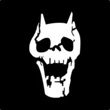

This week we learned how to make stickers on the roland printer. For the lips sticker I decided to use different colours and just put some random objects on them (being lips and an arrow, using photoshop and then printing them as 2 separate stickers). For the seal sticker I saw the image awhile ago and thought it was pretty funny and decided to make a sticker out of it (simply added image and made a circle sticker).
I think the hardest part was peeling the stickers off and attaching them perfectly without wrinkles or air bubbles as the paper is very sticky. Through this week I learned how to use the rolan printer, how to make stickers via CorelDraw, and how to make multi-layered stickers.


For my mold I did a simple google search of a skull, made some edits on photoshop so it would fill all the holes when making a chocolate mold, and put it into selva3d to make the stl file. I didn't make the mold (Mr. Gerber did) but I did make the chocolate part so I guess the hardest part of that was not making it overflow as a lot of chocolate came out the pot really quick
 Skull Files